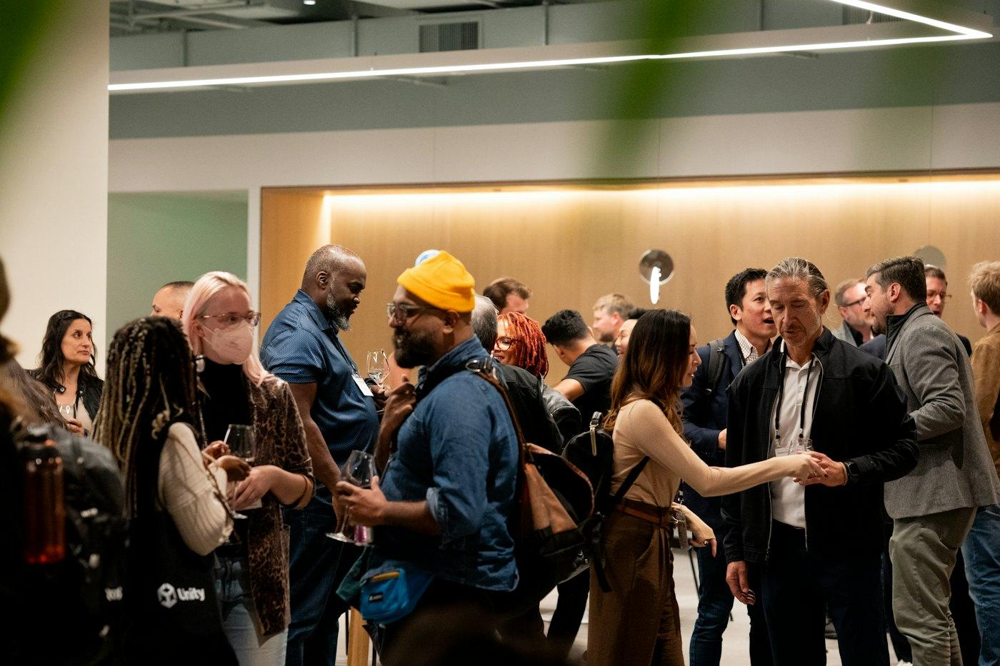
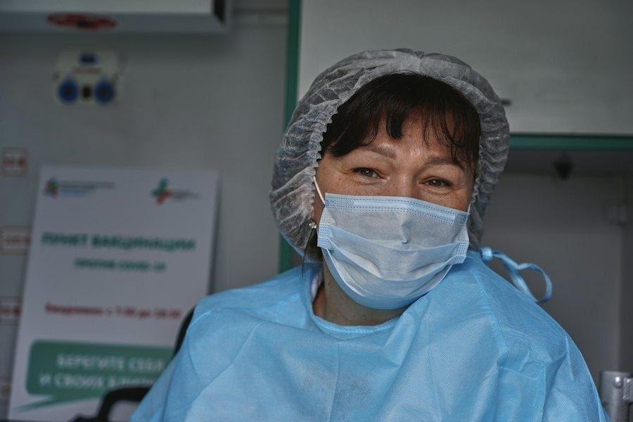

Warm-up · The first question

Is “What do you do?” a good first question — or too personal?
The best first question with a new person is…
Tap + for every vote · say your choice out loudIn the USA 🇺🇸
“What do you do?” is often question number 2 — after the name.
In other places 🌍
People ask about family or the city first. The job comes later.
Teacher notes · §1 Warm-up
Pedagógica
- Reciclaje S05 (60 s): dos alumnos te hacen una de sus 5 preguntas de tarea (“Are you from Celaya?”) y tú respondes con respuesta corta.
- Escucha la pregunta del coach, luego votación: cada alumno dice en voz alta su opción (“Number 2!”) y tú sumas el voto. Acepta español mínimo: aquí solo se activa.
- “What do you do?” es un chunk de reconocimiento: no expliques do. La respuesta es siempre “I'm a…”.
Engagement
- Desacuerdo de la ficha: en EE. UU. el trabajo va primero; en otros lugares, la familia. Pregunta: “And in Mexico?” y deja que dos personas defiendan posturas distintas.
- Cierra en voz alta: “The class says: the best first question is ___.”
Crecimiento
- “In 45 minutes you'll be a recruiter at a career fair and ask 5 questions.”
- Anota quién ya dice “I'm a…” y quién dice “I'm engineer” (sin artículo): es su “antes”.
Vocabulary · Jobs around you
Tap to flip · 🔊 to listen
0 / 10 flippedMatch the job and the photo
Tap a job, then its photo. Say the sentence: “She's a nurse.”
Describe It, Don't Say It
1. Don't say the job. 2. Use your two clue cards — or mime. 3. The answer is a sentence: “He's a driver.”
Group: the teacher sends the job to the describer in private chat. Teams take turns. 45 seconds per round.
1:1: the teacher describes rounds 1–3, the student describes rounds 4–7 (the teacher shows the photo in teacher view).

Teacher notes · §2 Vocabulary
Pedagógica
- Tarjetas (3 min): tú dices, ellos repiten 2 veces. Marca el enlace an‿engineer y que “salesperson” es una sola palabra.
- Unir (1 min): al acertar, el alumno dice la oración completa “He's a driver.”
- VOC-07 versión A1 (3-3-3, 7 rondas, ~4 min): el describidor solo puede usar sus 2 pistas (botones) o mímica en cámara. La respuesta cuenta solo como oración: “She's a nurse.” Una palabra sola = 0. Tú das +1 al equipo en turno y luego “Reveal”.
Engagement
- Rondas 6 y 7 (student / retired) generan risa: la mímica de “retired” es la favorita.
- Cierre en voz alta: “Team __ has __ points. The top word was ___.”
Crecimiento
- “What do you do?” se queda como chunk de reconocimiento (sin sistema do; eso es Tier 02).
- Las fotos de estas tarjetas vuelven en §5 y en el podcast de §6: memoria visual.
Grammar · Where is your office?
At a career fair. Find the question words.
Hi! What's your name?
I'm Lucía Ramos.
What's your job, Lucía?
I'm a nurse.
Where is your hospital?
It's in León.
Who is your boss?
Dr. Ortiz. He's very nice.
The question compass · tap a direction
| Jobs and places | |
|---|---|
| + | She's a nurse. The hospital is in León. I'm an engineer. |
| − | He isn't a doctor. He's a driver. |
| ? | What's your job? Where is your office? Who is your boss? How old is she? |
¿Qué es? Preguntas de información con el verbo be. Empiezan con una palabra interrogativa: What (qué/cuál), Where (dónde), Who (quién), How old (qué edad), How (cómo).
Orden: la palabra interrogativa va primero y luego be: What is…? Where are…? Nunca “Where your office is?”. What's = What is.
Profesiones: llevan a o an: I'm a nurse / I'm an engineer (an antes de sonido vocal). En español decimos “Soy enfermera”; en inglés nunca “I'm nurse”. (a/an se profundiza en la sesión 10).
“What do you do?” significa “¿a qué te dedicas?”. Hoy solo la entendemos: la respuesta es I'm a…, nunca “I do nurse”.
Entonación: en preguntas Wh- la voz baja al final ↘ (al revés que en “Are you…?” ↗).
Choose the right form
Build-Up Sentence — how high is your ladder?
1. Start with a short sentence. 2. Add one thing each time. 3. Keep it correct — one mistake breaks the ladder.
Mistakes Spanish speakers make
Teacher notes · §3 Grammar
Pedagógica
- Explicación ≤5 min: diálogo → brújula (cada palabra Wh- = un tipo de información: cosa, lugar, persona, edad, estado) → fórmula → tabla. Práctica A mecánica (≤1/3 del bloque).
- GRM-17 (3-3-3): el equipo en turno dice la oración del peldaño con el dato nuevo; ✓ = sube, ✗ = la escalera se rompe y vuelve a 0. Escalera 3 es libre (meaningful): cada alumno usa a una persona real que conoce.
- Límite: “What do you do?” solo reconocimiento; sin otras preguntas con do.
Engagement
- Cierre en voz alta: “Our best ladder has __ steps: ___.”
- 1:1: el alumno contra su propio récord; tú intentas romperle la escalera con un dato difícil (“+ How old?”).
Crecimiento
- Las preguntas Wh- se reciclan en S8 (quiz), S20 (When/What time) y S25 (How many).
- Registra quién dice “I'm engineer”: se corrige en §8.
Reading · Three work profiles
Say the answer, then click
Teacher notes · §4 Reading
Pedagógica
- Lectura 1 (40 s): ¿quién no trabaja? Lectura 2: 6 preguntas; el alumno dice la respuesta completa en voz alta antes de hacer clic.
- Trampas: “She's nurse.” (sin a) y respuestas con lugar en vez de trabajo.
- “volunteer”, “factory”, “library” = reconocimiento; no son léxico meta.
Engagement
- Pregunta extra real: “Who has a job like Lucía in your family?” — sin datos privados.
Crecimiento
- Los perfiles son el modelo de la tarea: 3 personas que conoces (nombre + trabajo + lugar).
Listening · The job sound lab

Train your ears: the little “an”, the question word at the start, and the voice that goes down ↘.
Plays the ElevenLabs MP3s from audio/ when they exist; otherwise the browser voice.
a or an? Listen and tap
Which question word? No text — only your ears
Quick answer — the coach asks, you answer
Listen, look at the photo, say the answer out loud — then click.
Teacher notes · §5 Listening
Pedagógica
- La ficha no trae guion: este bloque es laboratorio de pronunciación y escucha (sin dinámica LIS). 3 partes de 2 min.
- Parte 1: “an” se pega a la vocal: a-nengineer. Pide que lo digan en una sola “palabra”.
- Parte 2: el texto está oculto; solo se escucha la primera palabra. Después, repiten las 4 tarjetas de melodía con la voz que baja ↘ (contraste con S05 ↗).
- Parte 3: el alumno dice la respuesta antes de hacer clic.
Engagement
- Cierre en voz alta: “__ of 8 — perfect ears!”, “__ of 6 question words.”
- Récord personal: responder la parte 3 en menos de 3 s (sin puntos por velocidad).
Crecimiento
- Voces: NARRADOR (mujer, EE. UU.) y COACH (hombre, EE. UU.). Sin personajes nuevos en S06.
Speaking · The Job Podcast
“What's your job?” — the one question you can't ask!
1. You are a podcast guest. 2. Answer with your secret card. 3. The audience guesses your job.
Group: the teacher gives each guest a card number in private chat. The host asks; the audience can ask too. Guessed in 6 questions or less = point for the audience. More = point for the guest.
1:1: round 1, the teacher is the guest and the student asks. Round 2, the student is the guest. Then change.
Guest: open ONLY your card
Fictional people — not you!Your guess — say it first: “You're a teacher!”
8 questions · always 2 follow-ups
Teacher notes · §6 Speaking
Pedagógica
- B18-12 versión A1 (3-3-3): el invitado recibe en privado un número de tarjeta (≤15 palabras). El host y la audiencia hacen preguntas Wh- con be y sí/no (S05); está prohibido preguntar “What's your job?”. Cada pregunta = un círculo del contador.
- La audiencia adivina con oración completa: “You're a nurse!”. Acierto en ≤6 preguntas = punto audiencia; más de 6 = punto invitado. Luego cambian roles.
- Deck de 8 preguntas cuando cada alumno fue invitado una vez. Siempre 1 follow-up; nunca una palabra sola.
Engagement
- Enciende “ON AIR” al iniciar cada entrevista: cambia la energía del grupo.
- Cierre en voz alta: “The job was ___. Guessed in __ questions.”
- Q2 (dream job) y Q5 (¿es buena primera pregunta?) generan opinión real: déjalos defenderla.
Crecimiento
- Anota 2 aciertos y 3 errores repetidos para §8 (típicos: “Where your office is?”, “I'm engineer”, “Who is you boss?”).
- Q6 menciona la edad de jubilación: tema que vuelve en S21 (horarios de trabajo).
Mission · Career Fair Booth
You are the recruiter.
Choose a job opening. Two candidates come to your booth. Ask each one 5 Wh- questions — What? Where? Who? How? — then decide: who gets the job? Say it in 2 sentences.
Group: pairs in breakout rooms. Round 1: A is the recruiter, B plays the candidates of opening 1. Round 2: change, opening 2. 6 minutes.
1:1: the student is the recruiter for opening 1; the teacher plays the candidates. Then change.
Choose the opening
Candidate cards — only the candidate opens them
Wh- questions used
Success: 5 Wh- questions with the right order (Where is…?) + the decision said with be.
Your decision
Teacher notes · §7 Mission
Pedagógica
- Ronda 1 (3 min): el reclutador entrevista a los 2 candidatos de la vacante elegida (5 preguntas Wh- cada uno) y decide en 2 frases con be. Ronda 2 (3 min): cambian roles y vacante.
- Evidencia: tú marcas qué palabras Wh- usó y cuentas preguntas correctas / intentadas (“Correct” solo si el orden es Wh- + be).
- No interrumpas: el feedback va en §8.
Engagement
- Las tarjetas tienen un “pero” cada una (sin experiencia, lejos, otro trabajo): así la decisión es real y se discute.
- Anuncia: “Booth 6 has a new salesperson: ___!”
Crecimiento
- Dato cultural útil para el alumno: en EE. UU. una entrevista de trabajo no pregunta edad ni estado civil (es ilegal). Por eso la misión usa What/Where/Who/How y deja “How old” para el podcast.
- “Session 7: Sorry, can you repeat that? — survival phrases.”
Wrap-up · Better questions, better answers
✓ Success
↑ Upgrade
✎ Repair
↻ 2nd try
Interview one candidate again — with the upgrades. Same partner, better English.
60 seconds · 5 questions
Today I can…
3 people you know · name + job + place
You can ask about jobs and places — and say “I'm a…”.
Homework: 3 people you know. Next: Session 7 · Sorry, Can You Repeat That?
Teacher notes · §8 Wrap-up
Pedagógica
- Máximo 2 aciertos y 3 correcciones de alto valor (a/an con profesiones, orden Wh- + be, “How old is…?”). Segundo intento: una entrevista otra vez.
- Exit quiz en voz alta: el alumno dice la respuesta antes de hacer clic.
Engagement
- Compara con el “antes” de §1: “Minute 3: ‘Engineer.’ Minute 55: ‘I'm an engineer. My office is in Celaya.’”
Crecimiento
- La tarea se guarda en este navegador. Al iniciar S7, cada alumno presenta a 1 persona de su tarea (reciclaje).
- Registra: puntos de Describe It, escalera más alta, preguntas del podcast y preguntas correctas de la misión.